🧬 RNN 进阶：LSTM、GRU 与双向网络
import torch import matplotlib.pyplot as plt # 设置中文字体 plt.rcParams['font.sans-serif'] = ['SimHei'] # 微软雅黑 plt.rcParams['axes.unicode_minus'] = False # 解决负号显示问题 # 设置设备，优先使用顺序：GPU > MPS > CPU DEVICE = torch.device( "cuda" if torch.cuda.is_available() else "mps" if torch.backends.mps.is_available() else "cpu" ) print(f"当前设备：{DEVICE}")
当前设备：cuda
1 认识RNN模型
学习目标
- 了解什么是RNN模型.
- 了解RNN模型的应用.
- 了解RNN模型的分类.
1.1 什么是RNN模型
-
RNN(Recurrent Neural Network), 循环神经网络, 输入一般是序列数据, 捕捉序列之间的关系特征, 输出一般也是序列.
-
完整的RNN神经网络的结构如下:
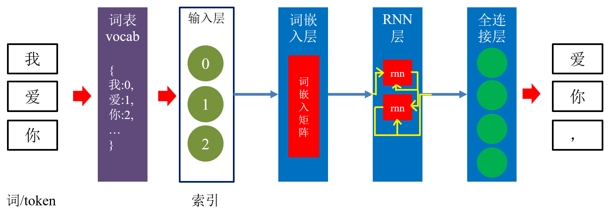
- 单层RNN的计算模型如下:
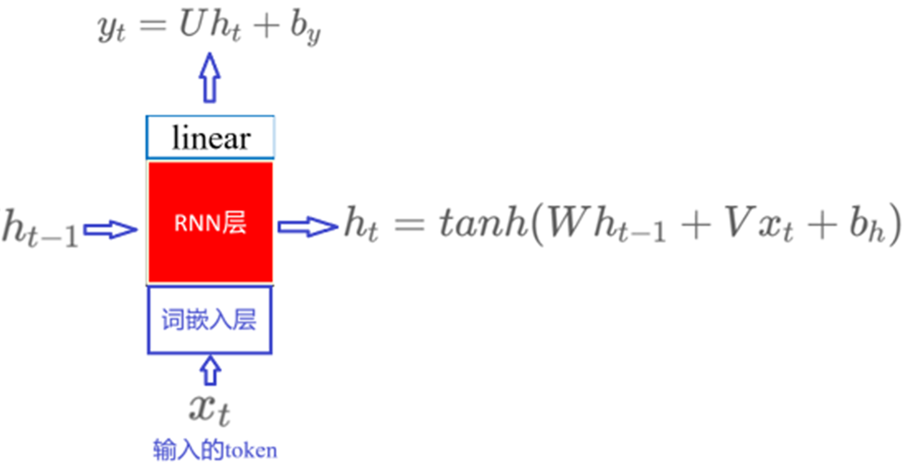
- RNN单层网络结构:
- 沿时间步展开的单层RNN网络结构:
RNN沿着时间步/序列长度循环计算隐藏状态
-
RNN层当前时间步的输入有两个：
- 1.整个RNN神经网络的上一时间步的输出结果的词向量；
- 2.同一个RNN层的上一时间步的隐藏状态。
-
RNN层当前时间步的输出结果：
- 1.当前时间步的隐藏状态；
- 2.所有时间步的隐藏状态。
1.2 RNN模型的应用
- RNN可以处理连续序列, 如人类的语言, 语音等, 广泛应用于NLP领域, 如文本分类, 情感分析, 意图识别, 机器翻译等.
1.3 RNN模型的分类
一个完整的 RNN 神经网络通常由三部分组成：
- 词嵌入层（Embedding Layer）：将离散的 词索引 映射为连续向量/词向量
- RNN 层：按时间步处理序列，生成隐藏状态
- 输出层（Output Layer）：根据任务类型输出预测结果
按输入–输出结构分类（RNN 模型）
N → N RNN（等长序列）
- 输入：长度为 N 的序列
- 输出：长度为 N 的序列
- 特点：输入与输出一一对应、长度相同
应用示例：
- 序列标注任务（token 级标注，如词性标注、命名实体识别）
- 等长度文本生成（如合辙诗句）
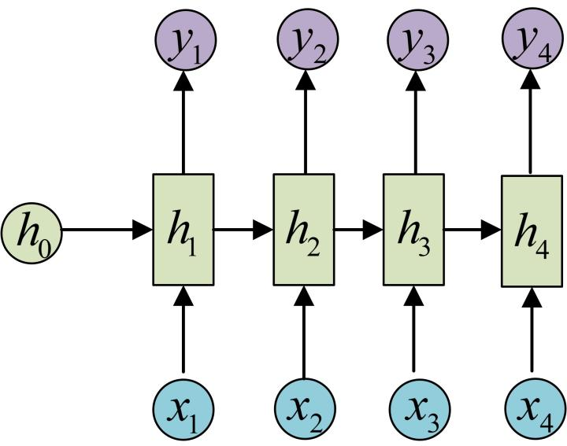
N → 1 RNN（序列到单值）
- 输入：一个序列
- 输出：一个单独的值
-
实现方式：
-
使用 最后一个时间步的隐藏状态
- 接 输出层（全连接层 + Sigmoid / Softmax）
应用示例：
- 文本分类
- 情感分析
- 用户意图识别
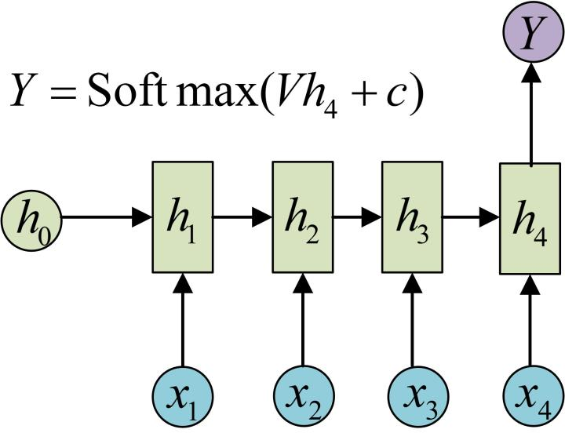
1 → N RNN（单输入到序列）
- 输入：一个固定向量
- 输出：一个序列
-
常见做法：
-
将输入向量作为每个时间步生成输出的条件信息
应用示例：
- 图像生成文字（Image Caption）
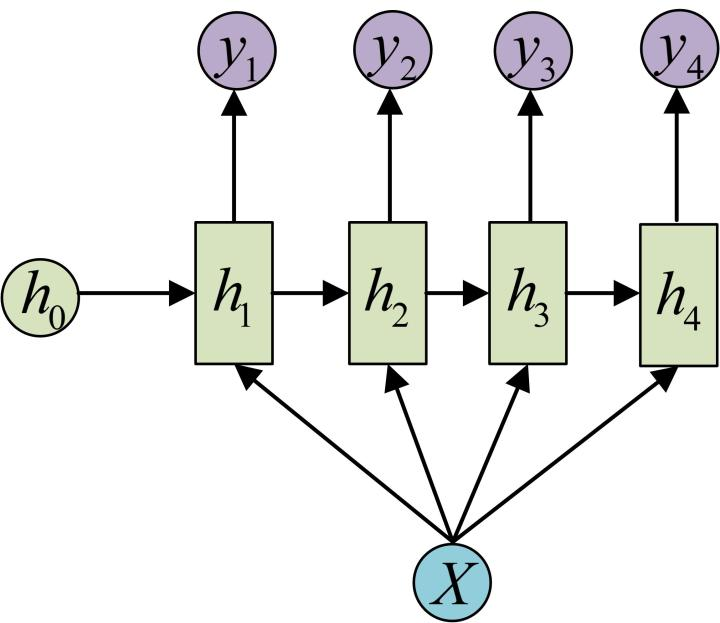
N → M RNN（不等长序列）,使用最多
- 输入与输出序列长度均不固定
-
由两部分组成：
-
编码器（Encoder）
- 解码器（Decoder）
- 该结构也称为 Seq2Seq 架构
基本思想：
- 编码器将输入序列压缩为上下文表示 ( c )
- 解码器在每个时间步利用 ( c ) 生成输出序列
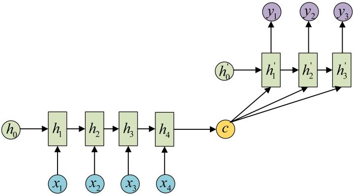
应用示例：
- 机器翻译
- 文本摘要
- 阅读理解
1.4 小结
-
什么是RNN模型: RNN 是一种循环计算隐藏状态来处理序列数据的神经网络模型
-
一个完整的 RNN 网络的组成：词嵌入层、RNN 层、输出层
-
RNN模型的应用: 处理连续序列（语言、语音等），广泛应用于NLP领域（文本分类、情感分析、意图识别、机器翻译等）
-
RNN模型的分类:
| 分类依据 | 类别 | 说明 |
|---|---|---|
| 按输入–输出结构 | N → N | 等长序列，输入输出一一对应（序列标注） |
| N → 1 | 序列到单值（文本分类、情感分析） | |
| 1 → N | 单输入到序列（图像生成文字） | |
| N → M | 不等长序列，Seq2Seq 架构（机器翻译、文本摘要） | |
| 按 RNN 层内部结构 | 传统 RNN | 结构简单，易梯度消失 |
| LSTM / Bi-LSTM | 门控机制，缓解梯度消失，可双向建模 | |
| GRU / Bi-GRU | 简化版 LSTM，参数更少，训练更快 |
2 传统RNN模型
学习目标
- 了解传统RNN的内部结构及计算公式.
- 掌握Pytorch中传统RNN工具的使用.
- 了解传统RNN的优势与缺点.
2.1 传统RNN的内部结构图
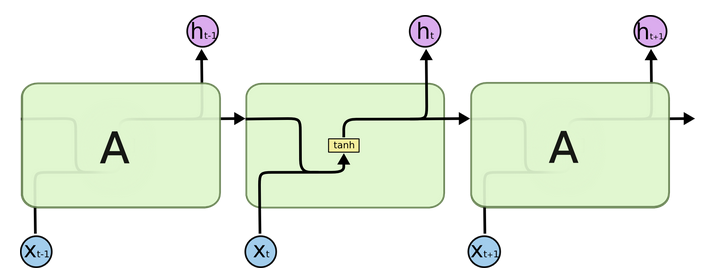
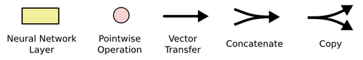
-
中间的方块, 输入有两部分, 分别是h(t-1)以及x(t), 代表上一时间步的隐藏状态, 以及当前时间步的输入表示（通常为词向量）, 进入RNN结构后, 会拼接形成新的张量[x(t), h(t-1)], 新张量通过一个全连接层 + tanh激活函数, 最终得到该时间步的隐藏状态h(t)，在下个时间步再输入RNN层. 以此类推.
-
内部结构过程演示:
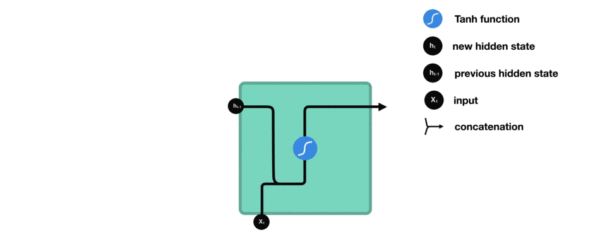
- 根据结构分析得出内部计算公式: $$ h_t = tanh(W_t[X_t, h_{t-1}] + b_t) $$
- 激活函数tanh的作用: 调节流经网络的值, 将值压缩在-1和1之间.
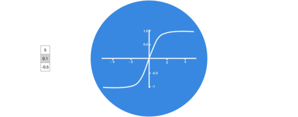
2.2 演示传统的RNN
""" 演示 传统RNN层 注意： 一个完整的RNN网络包括三部分：词嵌入层+RNN层+全连接层， 这里只是演示RNN层 RNN(Recurrent Neural Network),循环神经网络 通过沿着时间步维度/序列方向来循环计算隐藏状态来处理序列数据的神经网络 按照输入输出长度分类： N-N N-1 1-N N-M(seq2seq,最常用) 按照模型结构分类： 传统RNN LSTM/Bi-LSTM GRU/Bi-LSTM 传统RNN的优缺点： 优点：结构简单，参数量少，计算开销低 缺点：在长序列训练中，反向传播时梯度反复相乘，容易出现梯度消失 或 梯度爆炸，难以建模长期依赖 涉及到的API: nn.RNN(input_size,hidden_size,num_layers=1,batch_first=True,bidirectional=False): input_size: 输入维度，也就是词向量维度embed_dim hidden_size: 隐藏层维度 num_layers: RNN层的层数，默认1 batch_first: 输入/输出张量的0轴是否为batch轴，默认为False, 设为True时，输入和输出张量的0轴为batch轴 bidirectional: 是否使用双向RNN,默认为False,num_directions=1,设为True时，使用双向RNN,num_directions=2 输入(batch_first=True): input:输入的当前时间步的词向量, (batch_size,seq_len,embed_dim) h0:初始隐藏状态,(num_layers*num_directions,batch_size,hidden_size) 输出(batch_first=True): output:所有时间步的隐藏状态, (batch_size,seq_len,hidden_size*num_directions) hn:最后一个时间步的隐藏状态, (num_layers*num_directions,batch_size,hidden_size) 需要掌握的: 无 建议重点了解nn.RNN """ # 导包 import torch import torch.nn as nn # 1.定义函数，演示 传统RNN层(batch_first=True) def demo01(): # 0.设置随机种子 torch.manual_seed(4) # 1.构造RNN层的输入张量 # 1.1 模拟当前时间步的词向量，(batch_size,seq_len,embed_dim) x = torch.randn(1,3,10) # 1.2 上一个时间步的隐藏状态，这里是初始隐藏状态，(num_layers*num_directions,batch_size,hidden_size) h0 = torch.zeros(1,1,8) # 2.创建传统RNN层 rnn = nn.RNN( input_size=10, # 输入维度，也就是词向量维度embed_dim hidden_size=8, # 隐藏层维度 num_layers=1, # RNN层的层数，默认1 batch_first=True, # 输入/输出张量的0轴是否为batch轴，默认为False, 设为True时，输入和输出张量的0轴为batch轴 bidirectional=False # 是否开启双向RNN, 默认False ) # 3.RNN层的前向传播，也就是输入数据到RNN层 # 输入(batch_first=True): # x:输入的当前时间步的词向量, (batch_size,seq_len,embed_dim) # h0:初始隐藏状态,(num_layers*num_directions,batch_size,hidden_size) # 输出(batch_first=True): # output:所有时间步的隐藏状态, (batch_size,seq_len,hidden_size*num_directions) # hn:最后一个时间步的隐藏状态, (num_layers*num_directions,batch_size,hidden_size) output, hn = rnn(x, h0) # output, hn = rnn(x,) # 详解RNN层内部前向传播逻辑: # x: [x1,x2,x3] # output: [h1,h2,h3] # t=1: 输入x1,h0 -> 输出h1 # t=2: 输入x2,h1 -> 输出h2 # t=3: 输入x3,h2 -> 输出h3 # output: [h1,h2,h3], (batch_size,seq_len,hidden_size) # hn: h3, (num_layers*num_directions,batch_size,hidden_size) # 4.打印RNN层输出结果 print(f"output.shape:{output.shape}") # (1,3,8) print(f"hn.shape:{hn.shape}") # (1,1,8) print("*"*50) # 2.定义函数，演示 传统RNN层(batch_first=True), batch_size=4, seq_len=6 def demo02(): # 0.设置随机种子 torch.manual_seed(4) # 1.构造RNN层的输入张量 # 1.1 模拟当前时间步的词向量，(batch_size,seq_len,embed_dim) x = torch.randn(4,6,10) # 1.2 上一个时间步的隐藏状态，这里是初始隐藏状态，(num_layers*num_directions,batch_size,hidden_size) h0 = torch.zeros(1,4,8) # 2.创建传统RNN层 rnn = nn.RNN( input_size=10, # 输入维度，也就是词向量维度embed_dim hidden_size=8, # 隐藏层维度 num_layers=1, # RNN层的层数，默认1 batch_first=True, # 输入/输出张量的0轴是否为batch轴，默认为False, 设为True时，输入和输出张量的0轴为batch轴 bidirectional=False # 是否开启双向RNN, 默认False ) # 3.RNN层的前向传播，也就是输入数据到RNN层 # 输入(batch_first=True): # x:输入的当前时间步的词向量, (batch_size,seq_len,embed_dim) # h0:初始隐藏状态,(num_layers*num_directions,batch_size,hidden_size) # 输出(batch_first=True): # output:所有时间步的隐藏状态, (batch_size,seq_len,hidden_size*num_directions) # hn:最后一个时间步的隐藏状态, (num_layers*num_directions,batch_size,hidden_size) output, hn = rnn(x, h0) # output, hn = rnn(x,) # 详解RNN层内部前向传播逻辑: # x: [x1,x2,x3,...],我 爱 你 , # output: [h1,h2,h3,...] # t=1: 输入x1,h0 -> 输出h1 # t=2: 输入x2,h1 -> 输出h2 # t=3: 输入x3,h2 -> 输出h3 # ... # t=6: 输入x6,h5 -> 输出h6 # output: [h1,h2,h3,...], (batch_size,seq_len,hidden_size) # hn: h6, (num_layers*num_directions,batch_size,hidden_size) # 4.打印RNN层输出结果 print(f"output.shape:{output.shape}") # (4,6,8) print(f"hn.shape:{hn.shape}") # (1,4,8) # print(f"output[:,-1,:]:{output[:,[-1],:].shape}") # (4,1,8) print(f"hn:{hn}") print(f"output[:,-1,:]:{output[:,-1,:]}") # (4,1,8) print("*" * 50) # 3.定义函数，演示 传统RNN层(batch_first=True), batch_size=4, seq_len=6, num_layers=2 def demo03(): # 0.设置随机种子 torch.manual_seed(4) # 1.构造RNN层的输入张量 # 1.1 模拟当前时间步的词向量，(batch_size,seq_len,embed_dim) x = torch.randn(4,6,10) # 1.2 上一个时间步的隐藏状态，这里是初始隐藏状态，(num_layers*num_directions,batch_size,hidden_size) h0 = torch.zeros(2,4,8) # 2.创建传统RNN层 rnn = nn.RNN( input_size=10, # 输入维度，也就是词向量维度embed_dim hidden_size=8, # 隐藏层维度 num_layers=2, # RNN层的层数，默认1 batch_first=True, # 输入/输出张量的0轴是否为batch轴，默认为False, 设为True时，输入和输出张量的0轴为batch轴 bidirectional=False # 是否开启双向RNN, 默认False ) # 3.RNN层的前向传播，也就是输入数据到RNN层 # 输入(batch_first=True): # x:输入的当前时间步的词向量, (batch_size,seq_len,embed_dim) # h0:初始隐藏状态,(num_layers*num_directions,batch_size,hidden_size) # 输出(batch_first=True): # output:所有时间步的隐藏状态, (batch_size,seq_len,hidden_size*num_directions) # hn:最后一个时间步的隐藏状态, (num_layers*num_directions,batch_size,hidden_size) output, hn = rnn(x, h0) # output, hn = rnn(x,) # 详解RNN层内部前向传播逻辑: # x: [x1,x2,x3] # output: [h1,h2,h3] # t=1: 输入x1,h0 -> 输出h1 # t=2: 输入x2,h1 -> 输出h2 # t=3: 输入x3,h2 -> 输出h3 # output: [h1,h2,h3], (batch_size,seq_len,hidden_size) # hn: h3, (num_layers*num_directions,batch_size,hidden_size) # 4.打印RNN层输出结果 print(f"output.shape:{output.shape}") # (4,6,8) print(f"hn.shape:{hn.shape}") # (2,4,8) # print(f"output[:,-1,:]:{output[:,[-1],:].shape}") # (4,1,8) # print(f"hn:{hn}") # print(f"output[:,-1,:]:{output[:,-1,:]}") # (4,1,8) print("*" * 50) # 4.定义函数，演示 传统RNN层(batch_first=True), batch_size=4, seq_len=6, num_layers=2,bidirectional=True def demo04(): # 0.设置随机种子 torch.manual_seed(4) # 1.构造RNN层的输入张量 # 1.1 模拟当前时间步的词向量，(batch_size,seq_len,embed_dim) x = torch.randn(4,6,10) # 1.2 上一个时间步的隐藏状态，这里是初始隐藏状态，(num_layers*num_directions,batch_size,hidden_size) h0 = torch.zeros(4,4,8) # 2.创建传统RNN层 rnn = nn.RNN( input_size=10, # 输入维度，也就是词向量维度embed_dim hidden_size=8, # 隐藏层维度 num_layers=2, # RNN层的层数，默认1 batch_first=True, # 输入/输出张量的0轴是否为batch轴，默认为False, 设为True时，输入和输出张量的0轴为batch轴 bidirectional=True # 是否开启双向RNN, 默认False ) # 3.RNN层的前向传播，也就是输入数据到RNN层 # 输入(batch_first=True): # x:输入的当前时间步的词向量, (batch_size,seq_len,embed_dim) # h0:初始隐藏状态,(num_layers*num_directions,batch_size,hidden_size) # 输出(batch_first=True): # output:所有时间步的隐藏状态, (batch_size,seq_len,hidden_size*num_directions) # hn:最后一个时间步的隐藏状态, (num_layers*num_directions,batch_size,hidden_size) output, hn = rnn(x, h0) # output, hn = rnn(x,) # 详解RNN层内部前向传播逻辑: # x: [x1,x2,x3] # output: [h1,h2,h3] # t=1: 输入x1,h0 -> 输出h1 # t=2: 输入x2,h1 -> 输出h2 # t=3: 输入x3,h2 -> 输出h3 # output: [h1,h2,h3], (batch_size,seq_len,hidden_size*num_directions) # hn: h3, (num_layers*num_directions,batch_size,hidden_size) # 4.打印RNN层输出结果 print(f"output.shape:{output.shape}") # (4,6,16) print(f"hn.shape:{hn.shape}") # (4,4,8) # print(f"output[:,-1,:]:{output[:,[-1],:].shape}") # (4,1,8) # print(f"hn:{hn}") # print(f"output[:,-1,:]:{output[:,-1,:]}") # (4,1,8) print("*" * 50) # 测试 if __name__ == '__main__': demo01() demo02() demo03() demo04()
output.shape:torch.Size([1, 3, 8])
hn.shape:torch.Size([1, 1, 8])
**************************************************
output.shape:torch.Size([4, 6, 8])
hn.shape:torch.Size([1, 4, 8])
hn:tensor([[[-0.2340, 0.2915, -0.4611, -0.8591, -0.5781, 0.9131, 0.6180,
-0.1553],
[-0.1825, 0.9070, -0.0407, -0.3778, 0.1596, 0.1857, -0.7413,
-0.3421],
[ 0.0303, 0.4571, 0.0453, -0.8420, 0.0043, 0.9135, 0.3877,
0.6076],
[-0.5023, 0.7219, -0.7713, -0.2728, -0.0425, 0.7799, 0.3094,
0.4288]]], grad_fn=<StackBackward0>)
output[:,-1,:]:tensor([[-0.2340, 0.2915, -0.4611, -0.8591, -0.5781, 0.9131, 0.6180, -0.1553],
[-0.1825, 0.9070, -0.0407, -0.3778, 0.1596, 0.1857, -0.7413, -0.3421],
[ 0.0303, 0.4571, 0.0453, -0.8420, 0.0043, 0.9135, 0.3877, 0.6076],
[-0.5023, 0.7219, -0.7713, -0.2728, -0.0425, 0.7799, 0.3094, 0.4288]],
grad_fn=<SelectBackward0>)
**************************************************
output.shape:torch.Size([4, 6, 8])
hn.shape:torch.Size([2, 4, 8])
**************************************************
output.shape:torch.Size([4, 6, 16])
hn.shape:torch.Size([4, 4, 8])
**************************************************
2.3 传统 RNN 的优缺点
传统 RNN 的优势
- 结构简单、参数量少，计算和内存开销较低
- 相比 LSTM / GRU，更易实现，在短序列任务中训练和推理效率较高
传统 RNN 的缺点
- 在长序列建模中效果较差
- 由于时间维度上的反向传播涉及梯度的反复相乘，训练过程中容易出现 梯度消失或梯度爆炸，难以捕捉长期依赖关系
梯度消失与梯度爆炸
在 RNN 的时间反向传播（BPTT）中，梯度可表示为多个时间步雅可比矩阵的连乘，形式上可简化为：
$$ \frac{\partial L}{\partial h_0} \approx \prod_{t=1}^{T} \left( \sigma'(z_t), W \right) $$
其中：
- $\sigma(\cdot)$ 通常为
tanh或sigmoid，其导数 小于 1 - $W$ 为循环权重矩阵
由此导致：
- 若连乘结果范数逐步变小 → 梯度消失,参数更新缓慢甚至停滞，模型无法学习长期依赖
- 若连乘结果范数逐步变大 → 梯度爆炸,参数更新过大，训练不稳定，可能出现数值溢出（NaN）
2.4 小结
- 传统 RNN 的内部结构：
- 在每个时间步，RNN 根据当前输入 $ x_t $ 和上一时间步的隐藏状态 $ h_{t-1} $，
经过线性变换并使用
tanh激活函数，得到新的隐藏状态 $ h_t $ -
tanh将隐藏状态的取值限制在 $(-1, 1)$ 区间内，有助于缓解数值不稳定问题 -
传统 RNN 的优缺点：
- 优点：结构简单，参数量少，计算开销低
-
缺点：在长序列任务中难以建模长期依赖，易出现梯度消失或爆炸问题
-
LSTM / GRU，部分解决了传统 RNN 在长期依赖建模上的不足
3 LSTM模型
学习目标
- 了解LSTM内部结构及计算公式.
- 掌握Pytorch中LSTM工具的使用.
- 了解LSTM的优势与缺点.
3.1 LSTM介绍
LSTM（Long Short-Term Memory）也称长短时记忆结构, 它是传统RNN的变体, 与经典RNN相比能够有效捕捉长序列之间的语义关联, 缓解梯度消失或爆炸现象. 同时LSTM的结构更复杂, 核心结构分为四个部分:
- 遗忘门
- 输入门
- 细胞状态
- 输出门
3.2 LSTM的内部结构图
LSTM结构分析
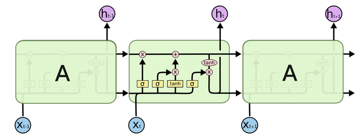
- 结构解释图:
- 遗忘门部分结构图与计算公式:
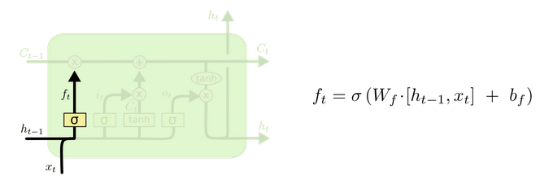
-
遗忘门结构分析:
-
与传统RNN的内部结构计算非常相似, 首先将当前时间步输入x(t)与上一个时间步隐含状态h(t-1)拼接, 得到[x(t), h(t-1)], 然后通过一个全连接层做变换, 最后通过sigmoid函数进行激活得到f(t), 我们可以将f(t)看作是门值, 好比一扇门开合的大小程度, 门值都将作用在通过该扇门的张量, 遗忘门门值将作用的上一层的细胞状态上, 代表遗忘过去的多少信息, 又因为遗忘门门值是由x(t), h(t-1)计算得来的, 因此整个公式意味着根据当前时间步输入和上一个时间步隐含状态h(t-1)来决定遗忘多少上一层的细胞状态所携带的过往信息.
- 遗忘门内部结构过程演示:
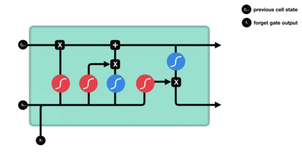
- 激活函数sigmiod的作用:- 用于帮助调节流经网络的值, sigmoid函数将值压缩在0和1之间.
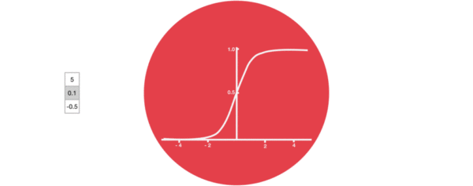
- 输入门部分结构图与计算公式:
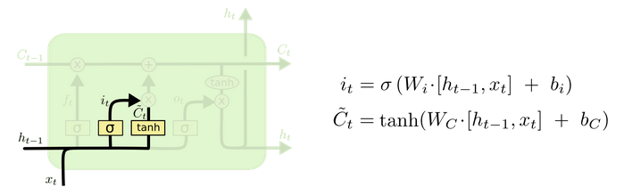
-
输入门结构分析:
-
我们看到输入门的计算公式有两个, 第一个就是产生输入门门值的公式, 它和遗忘门公式几乎相同, 区别只是在于它们之后要作用的目标上. 这个公式意味着输入信息有多少需要进行过滤. 输入门的第二个公式是与传统RNN的内部结构计算相同. 对于LSTM来讲, 它得到的是当前的细胞状态, 而不是像经典RNN一样得到的是隐含状态.
- 输入门内部结构过程演示:
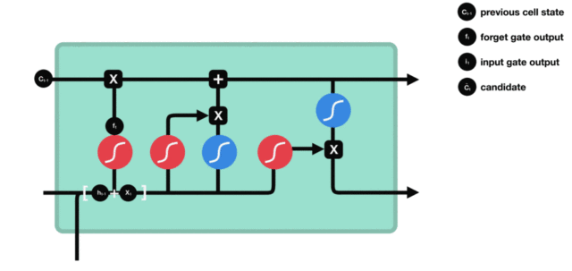
- 细胞状态更新图与计算公式:
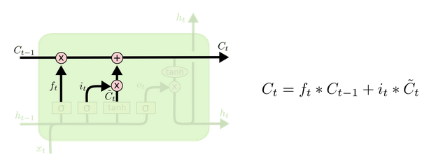
-
细胞状态更新分析:
-
细胞更新的结构与计算公式非常容易理解, 这里没有全连接层, 只是将刚刚得到的遗忘门门值与上一个时间步得到的C(t-1)相乘, 再加上输入门门值与当前时间步得到的未更新C(t)相乘的结果. 最终得到更新后的C(t)作为下一个时间步输入的一部分. 整个细胞状态更新过程就是对遗忘门和输入门的应用.
- 细胞状态更新过程演示:
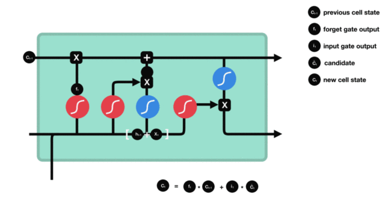
- 输出门部分结构图与计算公式:
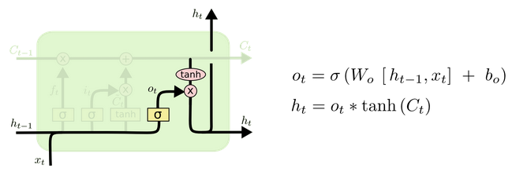
-
输出门结构分析:
-
输出门部分的公式也是两个, 第一个即是计算输出门的门值, 它和遗忘门，输入门计算方式相同. 第二个即是使用这个门值产生隐含状态h(t), 他将作用在更新后的细胞状态C(t)上, 并做tanh激活, 最终得到h(t)作为下一时间步输入的一部分. 整个输出门的过程, 就是为了产生隐含状态h(t).
- 输出门内部结构过程演示:
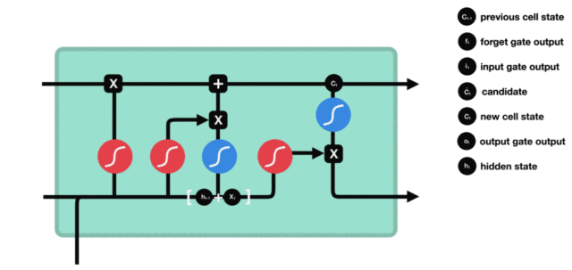
Bi-LSTM介绍
Bi-LSTM即双向LSTM, 它没有改变LSTM本身任何的内部结构, 只是将LSTM应用两次且方向不同, 再将两次得到的LSTM结果进行拼接作为最终输出.
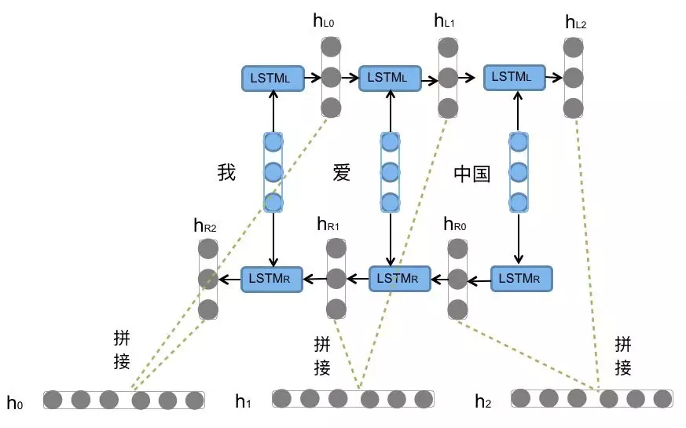
- Bi-LSTM结构分析:- 我们看到图中对"我爱中国"这句话或者叫这个输入序列, 进行了从左到右和从右到左两次LSTM处理, 将得到的结果张量进行了拼接作为最终输出. 这种结构能够捕捉语言语法中一些特定的前置或后置特征, 增强语义关联,但是模型参数和计算复杂度也随之增加了一倍, 一般需要对语料和计算资源进行评估后决定是否使用该结构.
使用Pytorch构建LSTM模型
3.3 演示LSTM
""" 演示 LSTM层的pytorch API LSTM简介： Long Short Term Memory, 长短时记忆网络，通过门控机制(遗忘门、输入门、输出门)与细胞状态设计来控制信息的保留与遗忘， 缓解 传统LSTM 在长序列中难以建模长期依赖的问题。主要缓解梯度消失，无法完全解决 LSTM的组成： 遗忘门：决定保留或遗忘哪些旧记忆 输入门：决定写入多少新记忆 细胞状态: 累积更新长期记忆 输出门：决定最终输出哪些信息 优点： 1.长序列建模效果好于传统LSTM 2.缓解了 梯度消失 3.能够捕捉复杂的时序特征，适用范围广 缺点： 1.参数多，计算慢 2.参数多，调参数难 关键的形状参数： nn.LSTM(input_size,hidden_size,num_layers,bidirectional,batch_first=True): input_size: 输入维度，也就是词向量的维度embed_dim hidden_size: 隐藏层维度 num_layers: LSTM层的层数 bidirectional: 是否是双向LSTM, 默认为False,num_directions=1;如果为True,则num_directions=2 batch_first: 输入和输出张量的0轴是否为batch轴, 默认为False, 设为True时，输入和输出张量的0轴为batch轴 输入(batch_first=True)： input: (batch_size,seq_len,embed_dim),词向量组成的文本张量 h0: (num_layers*num_directions,batch_size,hidden_size),初始隐藏状态(t=0) c0: (num_layers*num_directions,batch_size,hidden_size),初始细胞状态(t=0) 输出(batch_first=True)： output: (batch_size,seq_len,hidden_size*num_directions),所有时间步的隐藏状态 hn: (num_layers*num_directions,batch_size,hidden_size),最后时间步的隐藏状态 cn: (num_layers*num_directions,batch_size,hidden_size),最后时间步的细胞状态 需要掌握的： 无 重点了解nn.LSTM """ # 导包 import torch import torch.nn as nn # 1.定义函数，演示 LSTM层(batch_first=True) def demo01(): # 0.设置随机种子 torch.manual_seed(4) # 1.构造LSTM层的输入张量 # 1.1 模拟当前时间步的词向量，(batch_size,seq_len,embed_dim) x = torch.randn(1,3,10) # 1.2 上一个时间步的隐藏状态，这里是初始隐藏状态，(num_layers*num_directions,batch_size,hidden_size) h0 = torch.zeros(1,1,8) # 1.3 上一个时间步的细胞状态，这里是初始细胞状态，(num_layers*num_directions,batch_size,hidden_size) c0 = torch.zeros(1,1,8) # 2.创建传统LSTM层 lstm = nn.LSTM( input_size=10, # 输入维度，也就是词向量维度embed_dim hidden_size=8, # 隐藏层维度 num_layers=1, # LSTM层的层数，默认1 batch_first=True, # 输入/输出张量的0轴是否为batch轴，默认为False, 设为True时，输入和输出张量的0轴为batch轴 bidirectional=False # 是否开启双向LSTM, 默认False, num_directions=1 ) # 3.LSTM层的前向传播，也就是输入数据到LSTM层 # 输入(batch_first=True)： # input: (batch_size,seq_len,embed_dim),词向量组成的文本张量 # h0: (num_layers*num_directions,batch_size,hidden_size),初始隐藏状态(t=0) # c0: (num_layers*num_directions,batch_size,hidden_size),初始细胞状态(t=0) # 输出(batch_first=True)： # output: (batch_size,seq_len,hidden_size*num_directions),所有时间步的隐藏状态 # hn: (num_layers*num_directions,batch_size,hidden_size),最后时间步的隐藏状态 # cn: (num_layers*num_directions,batch_size,hidden_size),最后时间步的细胞状态 output, (hn,cn) = lstm(x, (h0,c0)) # output, (hn,cn) = lstm(x,) # 详解LSTM层内部前向传播逻辑: # x: [x1,x2,x3] # output: [h1,h2,h3] # t=1: 输入x1,(h0,c0) -> 输出(h1,c1) # t=2: 输入x2,(h1,c1) -> 输出(h2,c2) # t=3: 输入x3,(h2,c2) -> 输出(h3,c3) # output: [h1,h2,h3], (batch_size,seq_len,hidden_size*num_directions) # hn: h3, (num_layers*num_directions,batch_size,hidden_size) # cn: c3, (num_layers * num_directions, batch_size, hidden_size), 最后时间步的细胞状态 # 4.打印LSTM层输出结果 print(f"output.shape:{output.shape}") # (1,3,8) print(f"hn.shape:{hn.shape}") # (1,1,8) print(f"cn.shape:{cn.shape}") # (1,1,8) print("*"*50) # 2.定义函数，演示 LSTM层(batch_first=True), bidirectional=True, num_directions=2 def demo02(): # 0.设置随机种子 torch.manual_seed(4) # 1.构造LSTM层的输入张量 # 1.1 模拟当前时间步的词向量，(batch_size,seq_len,embed_dim) x = torch.randn(1,3,10) # 1.2 上一个时间步的隐藏状态，这里是初始隐藏状态，(num_layers*num_directions,batch_size,hidden_size) h0 = torch.zeros(2,1,8) # 1.3 上一个时间步的细胞状态，这里是初始细胞状态，(num_layers*num_directions,batch_size,hidden_size) c0 = torch.zeros(2,1,8) # 2.创建传统LSTM层 lstm = nn.LSTM( input_size=10, # 输入维度，也就是词向量维度embed_dim hidden_size=8, # 隐藏层维度 num_layers=1, # LSTM层的层数，默认1 batch_first=True, # 输入/输出张量的0轴是否为batch轴，默认为False, 设为True时，输入和输出张量的0轴为batch轴 bidirectional=True # 是否开启双向LSTM, 默认False, num_directions=1 ) # 3.LSTM层的前向传播，也就是输入数据到LSTM层 # 输入(batch_first=True)： # input: (batch_size,seq_len,embed_dim),词向量组成的文本张量 # h0: (num_layers*num_directions,batch_size,hidden_size),初始隐藏状态(t=0) # c0: (num_layers*num_directions,batch_size,hidden_size),初始细胞状态(t=0) # 输出(batch_first=True)： # output: (batch_size,seq_len,hidden_size*num_directions),所有时间步的隐藏状态 # hn: (num_layers*num_directions,batch_size,hidden_size),最后时间步的隐藏状态 # cn: (num_layers*num_directions,batch_size,hidden_size),最后时间步的细胞状态 output, (hn,cn) = lstm(x, (h0,c0)) # output, (hn,cn) = lstm(x,) # 详解LSTM层内部前向传播逻辑: # x: [x1,x2,x3] # output: [h1,h2,h3] # t=1: 输入x1,(h0,c0) -> 输出(h1,c1) # t=2: 输入x2,(h1,c1) -> 输出(h2,c2) # t=3: 输入x3,(h2,c2) -> 输出(h3,c3) # output: [h1,h2,h3], (batch_size,seq_len,hidden_size*num_directions) # hn: h3, (num_layers*num_directions,batch_size,hidden_size) # cn: c3, (num_layers * num_directions, batch_size, hidden_size), 最后时间步的细胞状态 # 4.打印LSTM层输出结果 print(f"output.shape:{output.shape}") # (1,3,16) print(f"hn.shape:{hn.shape}") # (2,1,8) print(f"cn.shape:{cn.shape}") # (2,1,8) print("*"*50) # 测试 if __name__ == '__main__': demo01() demo02()
output.shape:torch.Size([1, 3, 8])
hn.shape:torch.Size([1, 1, 8])
cn.shape:torch.Size([1, 1, 8])
**************************************************
output.shape:torch.Size([1, 3, 16])
hn.shape:torch.Size([2, 1, 8])
cn.shape:torch.Size([2, 1, 8])
**************************************************
3.4 小结
- LSTM简介：
- Long Short Term Memory, 长短时记忆网络，通过门控机制与细胞状态设计来控制信息的保留与遗忘， 有效缓解传统 RNN 在长序列中的梯度消失问题，从而建模长期依赖。
- LSTM组成：
- 遗忘门：决定保留或忘记多少旧记忆
- 输入门：决定写入多少新记忆
- 细胞状态：累积更新长期记忆
- 输出门：决定输出哪些信息
- Bi-LSTM:
- 即双向LSTM, 在正向和反向序列上分别运行 LSTM，不改变内部结构，将两方向的隐藏状态拼接作为输出，增强上下文建模能力。
- LSTM优点：
- 1.能建模长期依赖
- 2.显著缓解梯度消失问题
- 3.适用任务广（NLP、时间序列等）
- 4.表达能力强，能学习复杂时序特征
- LSTM缺点：
- 1.计算开销大，训练慢
- 2.超参数多，调参难
- 3.可解释性差
4 GRU模型
学习目标
- 了解GRU内部结构及计算公式.
- 掌握Pytorch中GRU层的使用.
- 了解GRU的优缺点.
4.1 GRU介绍
GRU（Gated Recurrent Unit）也称门控循环单元, 是传统RNN的变体, 同LSTM一样能够有效捕捉长序列之间的语义关联, 缓解梯度消失现象. 它的结构要比LSTM更简单, 核心结构分为3个部分:
- 重置门：决定保留多少旧信息
- 更新门：决定旧信息在生成新状态时的参与程度
- 隐藏状态：存储关键信息
4.2 GRU的内部结构图
GRU结构分析
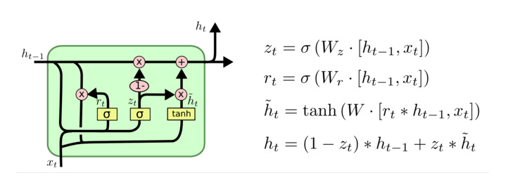
- 结构解释图:
- GRU的更新门和重置门结构图:
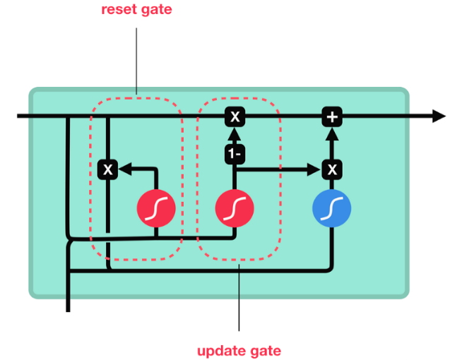
GRU 的计算步骤
- 计算更新门与重置门
将当前输入 $x_t$ 与上一时间步隐藏状态 $h_{t-1}$ 拼接， 通过线性变换和 Sigmoid 激活函数：
$ z_t = \sigma(W_z [x_t, h_{t-1}] + b_z) $
$ r_t = \sigma(W_r [x_t, h_{t-1}] + b_r) $
其中：
- $z_t$：更新门，控制新旧信息的比例
- $r_t$：重置门，控制旧信息的使用程度
2. 重置旧信息
使用重置门作用在上一时间步隐藏状态上：
$ r_t \odot h_{t-1} $
该操作决定旧状态中哪些信息可以参与当前计算。
- 计算候选隐藏状态
将当前输入 $x_t$ 与重置后的隐藏状态拼接， 经过线性变换和 Tanh 激活，得到候选隐藏状态：
$ \tilde{h}t = \tanh(W_h [x_t, r_t \odot h{t-1}] + b_h) $
- 更新当前隐藏状态
使用更新门对新旧状态进行加权融合：
$ h_t = z_t \odot \tilde{h}t + (1 - z_t) \odot h{t-1} $
当：
- $z_t \to 1$：更多采用新状态
- $z_t \to 0$：更多保留旧状态
得到最终的隐藏状态输出 $h_t$。
Bi-GRU介绍
Bi-GRU与Bi-LSTM的逻辑相同, 都是不改变其内部结构, 将模型沿着序列的正方向和反方向各应用一次, 再将两次得到的结果进行拼接作为最终输出. 具体参见上小节中的Bi-LSTM.
使用Pytorch构建GRU模型
- 位置: 在torch.nn工具包之中, 通过torch.nn.GRU可调用.
-
nn.GRU类初始化主要参数解释:
-
input_size: 输入张量x中特征维度的大小.
- hidden_size: 隐层张量h中特征维度的大小.
- num_layers: 隐含层的数量.- bidirectional: 是否选择使用双向LSTM, 如果为True, 则使用; 默认不使用.
-
nn.GRU类实例化对象主要参数解释:
-
input: 输入张量x.- h0: 初始化的隐层张量h.
""" 演示 GRU层的API GRU介绍： Gated Recurrent unit,门控循环单元，简化版的LSTM，计算更简单，也能处理长序列 核心设计思路: 重置门, 更新门. 在LSTM的基础上, 对部分门做合并. - 重置门：决定保留多少旧信息 - 更新门：决定旧信息在生成新状态时的参与程度 - 隐藏状态：存储关键信息 优点: 和LSTM一样, 可以处理长序列语义关联, 能有效缓解梯度消失的问题. 关于长序列的处理效果: 优于传统RNN,接近LSTM 关于计算复杂度: LSTM > GRU > RNN 弊端: 1.不能完全解决梯度消失/爆炸问题 2.不能并行计算.在大规模数据量的实际场景中, 是RNN结构的关键瓶颈. 涉及到的API: nn.GRU(input_size,hidden_size,num_layers=1,batch_first=True,bidirectional=False): input_size: 输入维度，也就是词向量维度embed_dim hidden_size: 隐藏层维度 num_layers: GRU层的层数，默认1 batch_first: 输入/输出张量的0轴是否为batch轴，默认为False, 设为True时，输入和输出张量的0轴为batch轴 bidirectional: 是否使用双向GRU,默认为False,num_directions=1,设为True时，使用双向RNN,num_directions=2 输入(batch_first=True): input:输入的当前时间步的词向量, (batch_size,seq_len,embed_dim) h0:初始隐藏状态,(num_layers*num_directions,batch_size,hidden_size) 输出(batch_first=True): output:所有时间步的隐藏状态, (batch_size,seq_len,hidden_size*num_directions) hn:最后一个时间步的隐藏状态, (num_layers*num_directions,batch_size,hidden_size) 需要掌握的: 无 建议重点了解nn.RNN """ # 导包 import torch import torch.nn as nn # 1.定义函数，演示 传统GRU层(batch_first=True) def demo01(): # 0.设置随机种子 torch.manual_seed(4) # 1.构造RNN层的输入张量 # 1.1 模拟当前时间步的词向量，(batch_size,seq_len,embed_dim) x = torch.randn(1,3,10) # 1.2 上一个时间步的隐藏状态，这里是初始隐藏状态，(num_layers*num_directions,batch_size,hidden_size) h0 = torch.zeros(1,1,8) # 2.创建GRU层 rnn = nn.GRU( input_size=10, # 输入维度，也就是词向量维度embed_dim hidden_size=8, # 隐藏层维度 num_layers=1, # RNN层的层数，默认1 batch_first=True, # 输入/输出张量的0轴是否为batch轴，默认为False, 设为True时，输入和输出张量的0轴为batch轴 bidirectional=False # 是否开启双向RNN, 默认False ) # 3.RNN层的前向传播，也就是输入数据到RNN层 # 输入(batch_first=True): # x:输入的当前时间步的词向量, (batch_size,seq_len,embed_dim) # h0:初始隐藏状态,(num_layers*num_directions,batch_size,hidden_size) # 输出(batch_first=True): # output:所有时间步的隐藏状态, (batch_size,seq_len,hidden_size) # hn:最后一个时间步的隐藏状态, (num_layers*num_directions,batch_size,hidden_size) output, hn = rnn(x, h0) # output, hn = rnn(x,) # 详解RNN层内部前向传播逻辑: # x: [x1,x2,x3] # output: [h1,h2,h3] # t=1: 输入x1,h0 -> 输出h1 # t=2: 输入x2,h1 -> 输出h2 # t=3: 输入x3,h2 -> 输出h3 # output: [h1,h2,h3], (batch_size,seq_len,hidden_size*num_directions) # hn: h3, (num_layers*num_directions,batch_size,hidden_size) # 4.打印RNN层输出结果 print(f"output.shape:{output.shape}") # (1,3,8) print(f"hn.shape:{hn.shape}") # (1,1,8) print("*"*50) # 测试 if __name__ == '__main__': demo01()
output.shape:torch.Size([1, 3, 8])
hn.shape:torch.Size([1, 1, 8])
**************************************************
GRU优缺点
-
GRU的优势:
-
GRU和LSTM作用相同, 在捕捉长序列语义关联时, 能有效抑制梯度消失, 效果都优于传统RNN且计算复杂度相比LSTM要小.
-
GRU的缺点:
-
GRU仍然不能完全解决梯度消失问题, 同时其作用RNN的变体, 有着RNN结构本身的一大弊端, 即不可并行计算, 这在数据量和模型体量逐步增大的未来, 是RNN发展的关键瓶颈.
4.3 小结
-
GRU（Gated Recurrent Unit）也称门控循环单元结构, 也是传统RNN的变体, 同LSTM一样能够有效捕捉长序列之间的语义关联, 缓解梯度消失. 同时它的结构和计算要比LSTM更简单, 核心结构可以分为两个部分:
-
更新门
- 重置门
- 内部结构:
- 和之前分析过的LSTM中的门控一样, 首先计算更新门和重置门的门值. 接着使用这个重置后的h(t-1)进行基本的RNN计算, 得到新的h(t). 最后得到最终的隐含状态输出h(t).
-
Bi-GRU与Bi-LSTM的逻辑相同, 都是不改变其内部结构, 而是将模型应用两次且方向不同, 再将两次得到的LSTM结果进行拼接作为最终输出. 具体参见上小节中的Bi-LSTM.
-
Pytorch中GRU工具: torch.nn.GRU
-
GRU的优势:
- GRU和LSTM作用相同, 在捕捉长序列语义关联时, 能有效抑制梯度消失, 效果都优于传统RNN且计算复杂度相比LSTM要小.
- GRU的缺点:
- GRU仍然不能完全解决梯度消失问题, 有着RNN结构本身的一大弊端, 即不可并行计算，是RNN结构的关键瓶颈.
总结 RNN/LSTM/GRU
| 特性 | 传统 RNN | LSTM | GRU |
|---|---|---|---|
| 核心原理 | 沿着序列方向循环计算隐藏状态来处理序列信息 | 通过遗忘门、输入门、输出门和细胞状态控制信息流。三门一状态核心：遗忘门：决定保留或忘记多少旧记忆；输入门：决定写入多少新记忆；细胞状态：累积更新长期记忆；输出门：决定输出哪些信息 |
通过更新门和重置门控制信息流（简化版 LSTM）,两门一状态核心：重置门：决定保留多少旧信息；更新门：决定旧信息在生成隐藏状态时的参与程度；隐藏状态: 保存关键信息 |
| 内部状态 | 隐藏状态 $h_t$ | 隐藏状态 $h_t$ + 细胞状态 $c_t$ | 隐藏状态 $h_t$ |
| PyTorch API | nn.RNN(input_size, hidden_size, num_layers, batch_first, bidirectional) |
nn.LSTM(input_size, hidden_size, num_layers, batch_first, bidirectional) |
nn.GRU(input_size, hidden_size, num_layers, batch_first, bidirectional) |
| 输入 | input: (B, L, input_size) |
input: (B, L, input_size) |
input: (B, L, input_size) |
h0: (num_layers*D, B, H) |
h0: (num_layers*D, B, H) |
h0: (num_layers*D, B, H) |
|
| — | c0: (num_layers*D, B, H) |
— | |
| 输出 | output: (B, L, H*D) |
output: (B, L, H*D) |
output: (B, L, H*D) |
hn: (num_layers*D, B, H) |
hn: (num_layers*D, B, H) |
hn: (num_layers*D, B, H) |
|
| — | cn: (num_layers*D, B, H) |
— | |
| 优点 | 结构简单，参数少，计算快 | 能建模长期依赖，缓解梯度消失 | 效果接近 LSTM，参数更少，训练更快 |
| 缺点 | 1.梯度消失/爆炸，难以建模长期依赖;2.不可并行计算 | 1.参数多，计算慢，调参难;2.不可并行计算 | 1.不能完全解决梯度消失，2.不可并行计算 |
符号说明：B = batch_size，L = seq_len，H = hidden_size，D = num_directions（单向=1，双向=2），batch_first=True
如何选择：GRU/LSTM > RNN
5 扩展-RNN人名分类器
5.1 学习目标
- 了解有关人名分类问题和文本数据.
- 掌握使用RNN构建人名分类器实现过程.
5.2 案例介绍
- 关于人名分类问题:
输入一个人名, 使用模型判断它最有可能来自哪一个国家, 这在某些国际化业务中具有重要意义, 比如在用户注册时, 会根据用户填写的名字直接给他分配可能的国家或地区选项, 以及对应的手机号码位数等. - 人名分类数据预览 - 数据存放路径：$(home)/data/name_classfication.txt - 数据格式说明 每一行第一个单词为人名，第二个单词为国家名。中间用制表符tab分割
Huffmann German Hummel German Hummel German Hutmacher German Ingersleben German Jaeger German Jager German Deng Chinese Ding Chinese Dong Chinese Dou Chinese Duan Chinese Eng Chinese Fan Chinese Fei Chinese Abaimov Russian Abakeliya Russian Abakovsky Russian Abakshin Russian Abakumoff Russian Abakumov Russian Abakumtsev Russian Abakushin Russian Abalakin Russian
5.3 案例步骤
- 1.准备数据集/数据预处理 读取文本 -> 张量 -> 自定义的数据集对象 -> 数据加载器
- 2.搭建神经网络 RNN, LSTM, GRU RNN层 全连接层
- 3.模型训练 RNN, LSTM, GRU
-
4.模型预测 RNN, LSTM, GRU
-
注释：
- 1.NLP课程中，唯一一个使用one-hot编码的案例，工程中使用nn.Embedding
- 2.因为使用了one-hot来编码人名，按照一个英文字符对应一个词，无需jieba分词，无需构建词表
- 3.优先掌握RNN, LSTM, 注意GRU和RNN几乎一样
- 4.一般工程项目中，需要把数据集划分为训练集，验证集，测试集。这里只有训练集，做了简化处理
- 代码优化点:
- 1.设置了device,支持GPU加速训练，更符合工程实际
- 2.使用CrossEntropyLoss替换原有的NLLLoss, 更符合pytorch推荐
- 3.添加了截断填充到固定长度，支持batch_size>1，更符合工程实际
- 4.统一输入数据的形状为(batch_size, seq_len, input_size)
- 5.统一模型训练代码，避免重复写训练函数
""" 案例： 演示 RNN人名分类案例，根据人名，预测国家 NLP项目的工作流： 1.准备数据集/数据预处理 读取文本 -> 数值化 -> Dataset -> DataLoader 2.搭建神经网络 one-hot编码 RNN层(RNN, LSTM, GRU) 全连接层 3.模型训练 RNN, LSTM, GRU 1.前向传播 2.计算损失 3.梯度清零 4.反向传播 5.更新参数 4.模型预测 RNN, LSTM, GRU 注意： 1.这个案例是NLP课程中，唯一一个使用one-hot编码的案例，工程中使用nn.Embedding/预训练语言模型来处理文本分类任务 2.这里把每个字符作为一个token，一共有26个英文字母*2+5个特殊符号( .,;'), 不重复的token总数为57.采用one-hot编码，不需要构造词表了 3.使用RNN/LSTM/GRU来实现文本分类，目前主流工程采用Transformer/BERT/GPT架构来处理NLP任务，这里的文本分类主要用BERT架构 4.一般项目中，需要把数据集拆分为训练集、验证集、测试集。这里简化为只有训练集。 代码优化点： 1.设置了device,支持GPU加速训练 2.使用CrossEntropyLoss(自带了softmax,避免了数值溢出的问题)替换原有的NLLLoss, 更符合pytorch推荐 3.添加了截断填充到固定长度，支持batch_size>1 4.统一输入数据的形状为(batch_size, seq_len, *), RNN(batch_first=True) 5.统一模型训练代码，避免重复代码 需要掌握的： NLP分类任务的流程 具体代码细节无需掌握 """ # 导包 import os import torch # 导入nn准备构建模型 import torch.nn as nn import torch.nn.functional as F # 函数模块 import torch.optim as optim # 导入torch的数据源 数据迭代器工具包 from torch.utils.data import Dataset, DataLoader # 用于获得常见字母及字符规范化 import string # 导入时间工具包 import time # 引入制图工具包 import matplotlib.pyplot as plt # 可视化训练过程 from tqdm import tqdm # 设置中文字体 plt.rcParams['font.sans-serif'] = ['SimHei'] # 微软雅黑 plt.rcParams['axes.unicode_minus'] = False # 解决负号显示问题 # 定义批次大小 batch_size = 64 # 定义设备 device = torch.device("cuda" if torch.cuda.is_available() else "cpu") print(f"设备: {device}") # 定义最大长度 max_length = 10 # 1.准备数据集/数据预处理 # 1.1 定义变量,获取常用的字符，类似构建词表 all_letters = string.ascii_letters + " .,;'" print(f"常用字符: {all_letters}") num_letters = len(all_letters) print(f"常用字符个数/词表大小: {num_letters}") # 1.2 定义变量，获取标签列表，也就是国家列表 countries = ['Italian', 'English', 'Arabic', 'Spanish', 'Scottish', 'Irish', 'Chinese', 'Vietnamese', 'Japanese', 'French', 'Greek', 'Dutch', 'Korean', 'Polish', 'Portuguese', 'Russian', 'Czech', 'German'] # print(f"标签列表: {countries}") num_countries = len(countries) print(f"标签列表个数: {num_countries}") # 1.3 读取源文件，返回 样本列表 和 标签列表 def read_file(file_path): # 1.初始化 样本列表 和 标签列表 list_x = [] list_y = [] # 2.通过 with open() 打开文件 with open(file_path, 'r', encoding='utf-8') as f: lines = f.readlines() # 3.遍历所有行 for line in lines: # 4.数据清洗，过滤掉长度小于=5的样本 if len(line) <= 5: continue # 结束当前训练，进入下一个训练 # 5.划分出 输入特征/人名 和 标签/国家 # strip() 去除字符串两端的空白字符 x, y = line.strip().split("\t") # 6.添加到列表中 list_x.append(x) list_y.append(y) # 7.返回结果 return list_x, list_y # 1.4 定义数据集对象 class MyDataset(Dataset): # 1.定义init方法，初始化 样本，标签，最大长度，样本数量 def __init__(self, list_x, list_y, max_length): self.list_x = list_x self.list_y = list_y self.max_length = max_length self.num_samples = len(list_x) # 2.定义len方法，返回样本数量 def __len__(self): return self.num_samples # 3.定义getitem方法，返回指定索引的样本和标签 def __getitem__(self, index): # 1.进行索引边界校验 index = index % self.num_samples # 2.获取样本和标签 x = self.list_x[index] y = self.list_y[index] # 3.截断过长的样本 x = x[:self.max_length] # 获取前self.max_length个字符 # 4.对样本进行one-hot编码,形状(seq_len, num_letters) onehot_x = torch.zeros(self.max_length, num_letters) for i, letter in enumerate(x): onehot_x[i][all_letters.find(letter)] = 1 # print(f"onehot_x: {onehot_x}") # 5.对标签进行标签编码 label_y = torch.tensor(countries.index(y), dtype=torch.int64) # 6.返回结果 return onehot_x, label_y # 2.搭建神经网络 # RNN神经网络，RNN层+全连接层 class MyRNN(nn.Module): # 1.定义init方法，定义输入维度/词向量维度/num_letters，输出维度，隐藏层维度，rnn层数，rnn层，全连接层 def __init__(self, input_size, hidden_size, output_size, num_layers=1): # 初始化父类成员 super().__init__() # 定义网络层 self.input_size = input_size self.hidden_size = hidden_size self.output_size = output_size self.num_layers = num_layers # 参数1：input_size，输入维度/词向量维度/num_letters # 参数2：hidden_size，隐藏层维度 # 参数3：num_layers，rnn层数 # 参数4：batch_first，batch是否放到0轴，设为True,使得输入和输出张量的0轴为batch轴 self.rnn = nn.RNN(self.input_size, self.hidden_size, self.num_layers, batch_first=True) self.fc = nn.Linear(self.hidden_size, self.output_size) # 2.定义forward方法，实现前向传播 def forward(self, x, hidden=None): """ 前向传播 参数： x: (batch_size, seq_len, input_size) hidden: (num_layers, batch_size, hidden_size) 返回： y: (batch_size, output_size) hidden: 最后一时刻隐藏状态 """ # 输入x:形状(batch_size, seq_len, input_size) # 1.输入RNN层 # 所有时间步的隐藏状态output: 形状(batch_size, seq_len, hidden_size) # 最后一个时间步的所有层隐藏状态hidden: 形状(num_layers, batch_size, hidden_size) output, hidden = self.rnn(x, hidden) # 3.输入全连接层 last_output = output[:, -1, :] # (batch_size, hidden_size) y = self.fc(last_output) return y, hidden # LSTM class MyLSTM(nn.Module): # 1.定义init方法，定义输入维度/词向量维度/num_letters，输出维度，隐藏层维度，rnn层数，rnn层，全连接层 def __init__(self, input_size, hidden_size, output_size, num_layers=1): # 初始化父类成员 super().__init__() # 定义网络层 self.input_size = input_size self.hidden_size = hidden_size self.output_size = output_size self.num_layers = num_layers # 参数1：input_size，输入维度/词向量维度/num_letters # 参数2：hidden_size，隐藏层维度 # 参数3：num_layers，rnn层数 # 参数4：batch_first，batch是否放到0轴，设为True,使得输入和输出张量的0轴为batch轴 self.rnn = nn.LSTM(self.input_size, self.hidden_size, self.num_layers, batch_first=True) self.fc = nn.Linear(self.hidden_size, self.output_size) # 2.定义forward方法，实现前向传播 def forward(self, x, hidden=None): """ 参数： x: (batch_size, seq_len, input_size) hidden: (h0, c0) 返回： y: (batch_size, output_size) hidden: (hn, cn) """ # 1.输入RNN层 # 所有时间步的隐藏状态output: 形状(batch_size,seq_len,hidden_size) # 最后一个时间步的所有层隐藏状态hidden: 形状(num_layers,batch_size,hidden_size) output, (hn, cn) = self.rnn(x, hidden) # 3.输入全连接层 last_output = output[:, -1, :] # (batch_size, hidden_size) y = self.fc(last_output) return y, (hn, cn) # GRU # GRU神经网络，GRU层+全连接层 class MyGRU(nn.Module): # 1.定义init方法，定义输入维度/词向量维度/num_letters，输出维度，隐藏层维度，GRU层数，GRU层，全连接层 def __init__(self, input_size, hidden_size, output_size, num_layers=1): # 初始化父类成员 super().__init__() # 定义网络层 self.input_size = input_size self.hidden_size = hidden_size self.output_size = output_size self.num_layers = num_layers # 参数1：input_size，输入维度/词向量维度/num_letters # 参数2：hidden_size，隐藏层维度 # 参数3：num_layers，rnn层数 # 参数4：batch_first，batch是否放到0轴，设为True,使得输入和输出张量的0轴为batch轴 self.rnn = nn.GRU(self.input_size, self.hidden_size, self.num_layers, batch_first=True) self.fc = nn.Linear(self.hidden_size, self.output_size) # 2.定义forward方法，实现前向传播 def forward(self, x, hidden=None): """ 前向传播 参数： x: (batch_size, seq_len, input_size) hidden: (num_layers, batch_size, hidden_size) 返回： y: (batch_size, output_size) hidden: 最后一时刻隐藏状态 """ # 输入x:形状(batch_size, seq_len, input_size) # 1.输入RNN层 # 所有时间步的隐藏状态output: 形状(batch_size, seq_len, hidden_size) # 最后一个时间步的所有层隐藏状态hidden: 形状(num_layers, batch_size, hidden_size) output, hidden = self.rnn(x, hidden) # 3.输入全连接层 last_output = output[:, -1, :] # (batch_size, hidden_size) y = self.fc(last_output) return y, hidden # 3.模型训练 def train(model, dataset, lr=1e-3, epochs=10, model_path="./model/model.pth"): # 1.创建数据加载器对象 # 参数1：数据集对象；参数2：批次大小；参数3：是否打乱数据，训练时打乱，测试时不打乱 dataloader = DataLoader(dataset, batch_size=batch_size, shuffle=True) # 2.迁移模型 到设备 model.to(device) # 3.定义损失函数和优化器 loss_fn = nn.CrossEntropyLoss() optimizer = optim.Adam(model.parameters(), lr=lr) # 4.模型训练 # 定义列表，记录训练损失，训练准确率，训练时间 train_losses = [] train_accs = [] train_times = [] # 遍历epochs for epoch in range(epochs): # 0.设置为训练模式 model.train() # 初始化预测正确的样本数，总样本数 total_correct = 0 total_samples = 0 # 初始化 总训练损失 total_loss = 0.0 # 获取当前时间步 start_time = time.time() # 遍历数据加载器 for x, y in dataloader: # 0.迁移 数据 到 device x = x.to(device) y = y.to(device) # 1.前向传播 if isinstance(model, MyLSTM): y_pred, (hidden, cn) = model(x) else: y_pred, hidden = model(x) # 2.计算损失 loss = loss_fn(y_pred, y) # 3.梯度清零 optimizer.zero_grad() # 4.反向传播 loss.backward() # 5.更新参数 optimizer.step() # 6.更新当前轮次内的批次的统计数据 total_loss += loss.item() * x.shape[0] total_samples += x.shape[0] total_correct += (y_pred.argmax(dim=-1) == y).sum().item() # 7.计算当前轮次的平均损失，准确率，训练时间 train_loss = total_loss / total_samples train_acc = total_correct / total_samples train_time = time.time() - start_time train_losses.append(train_loss) train_accs.append(train_acc) train_times.append(train_time) # 8.打印训练结果 print(f"Epoch: {epoch+1}/{epochs} | " f"Train Loss: {train_loss:.4f} | " f"Train Acc: {train_acc:.4f} | " f"Train Time: {train_time:.2f}s") # 9.保存模型 os.makedirs("./model", exist_ok=True) torch.save(model.state_dict(), model_path) return train_losses, train_accs, train_times # 3.5.可视化，定义函数，绘制RNN,LSTM,GRU的训练曲线对比图 def plot_curves(all_train_stats=None): # 如果训练结果字典为空，则读取本地文件 if all_train_stats is None: all_train_stats = torch.load("./model/all_train_results.pth") # print(all_train_stats) plt.figure(figsize=(15, 5)) # 绘制训练损失对比图，绘制到一张图上 plt.subplot(1,3,1) for k, v in all_train_stats.items(): plt.plot(v['losses'], label=k) plt.xlabel("Epoch") plt.ylabel("Loss") plt.title("训练损失对比") plt.legend() # 绘制准确率曲线 plt.subplot(1,3,2) for k, v in all_train_stats.items(): plt.plot(v['accs'], label=k) plt.xlabel("Epoch") plt.ylabel("Accuracy") plt.title("训练准确率对比") plt.legend() # 绘制训练时间曲线 plt.subplot(1,3,3) avg_times = {k: sum(v['times'])/len(v['times']) for k, v in all_train_stats.items()} plt.bar(avg_times.keys(), avg_times.values()) # plt.legend(avg_times.keys()) plt.xlabel("模型") plt.ylabel("平均时间 (s)") plt.ylim(min(avg_times.values())-0.1,max(avg_times.values())+0.1) plt.title("平均训练时间对比") plt.legend() plt.tight_layout() plt.show() # 模型预测 def name_to_tensor(name, max_length=10): """ 将单个名字转为模型输入one-hot张量 返回形状：(1, max_length, num_letters) """ # 截断名字长度，确保不超过最大长度 name = name[:max_length] # 创建一个全零张量，形状为(max_length, num_letters)，用于存储名字的one-hot编码 tensor_x = torch.zeros(max_length, num_letters) # 遍历名字中的每个字符 for i, letter in enumerate(name): # 检查字符是否在字符集中 if letter in all_letters: # 找到字符在all_letters中的索引，并将对应位置设为1.0（one-hot编码） tensor_x[i][all_letters.find(letter)] = 1.0 # 增加一个batch维度，返回形状为(1, max_length, num_letters)的张量 return tensor_x.unsqueeze(0) # 增加 batch 维度 # 定义函数，实现模型预测，使用训练好的模型对单个名字进行预测，返回topk预测结果 @torch.no_grad() # 关闭梯度计算 def predict(model_class, name, model_path="./model/my_rnn.pth", topk=3): # 1.加载模型 input_size, hidden_size, output_size = num_letters, 128, num_countries model = model_class(input_size, hidden_size, output_size) model.load_state_dict(torch.load(model_path)) # 2.迁移 模型 到设备 model.to(device) # 设置为评估模式 model.eval() # 3.将输入name转为one-hot张量 tensor_x = name_to_tensor(name) tensor_x = tensor_x.to(device) # 4.模型预测，得到logits y_logits, _ = model(tensor_x) # 5.使用softmax函数，将logits转为概率 y_prob = F.softmax(y_logits, dim=-1) # (1,output_size) # print(f"y_prob: {y_prob}") # print(f"y_prob.shape: {y_prob.shape}") # 6.获取概率最大的topk个预测结果 topk_prob, topk_idx = torch.topk(y_prob, k=topk) # print(f"topk_prob.shape: {topk_prob.shape}") # print(f"topk_idx.shape: {topk_idx.shape}") # 存储预测结果列表(countries[topk_idx], topk_prob) results = [(countries[idx], prob.item()) for idx, prob in zip(topk_idx[0], topk_prob[0])] # 7.返回结果 return results # 测试 if __name__ == '__main__': # 1.准备数据集 # 1.1 获取样本列表 和 标签列表 list_x, list_y = read_file("./data/name_classfication.txt") print(f"样本列表长度: {len(list_x)}") print(f"标签列表长度: {len(list_y)}") # 1.2 创建数据集对象 dataset = MyDataset(list_x, list_y, max_length) print(f"数据集长度：{len(dataset)}") # for x, y in dataset: # print(f"x: {x.shape}") # print(f"y: {y.shape}") # break # 1.3 创建数据加载器对象 # 参数1：数据集对象；参数2：批次大小；参数3：是否打乱数据，训练时打乱，测试时不打乱 dataloader = DataLoader(dataset, batch_size=batch_size, shuffle=True) print(f"数据加载器长度：{len(dataloader)}") # 数据加载器长度 = 数据集长度 / 批次大小 = 20074/32 = 628 # for x, y in dataloader: # print(f"x: {x.shape}") # print(f"y: {y.shape}") # break # 2.创建模型对象 # 训练RNN神经网络 input_size, hidden_size, output_size = num_letters, 128, num_countries model = MyRNN(input_size, hidden_size, output_size) # print(model) # 3.模型训练 # 定义字典，统一保存训练损失，准确率，时间 all_train_results = {} model_path = "./model/my_rnn.pth" train_losses, train_accs, train_times = train(model, dataset, lr=1e-3, epochs=50, model_path=model_path) all_train_results['RNN'] = { "losses": train_losses, "accs": train_accs, "times": train_times, } # 训练LSTM神经网络 model_path = "./model/my_lstm.pth" model = MyLSTM(input_size, hidden_size, output_size) train_losses, train_accs, train_times = train(model, dataset, lr=1e-3, epochs=50, model_path=model_path) all_train_results['LSTM'] = { "losses": train_losses, "accs": train_accs, "times": train_times, } # 训练GRU神经网络 model_path = "./model/my_gru.pth" model = MyGRU(input_size, hidden_size, output_size) train_losses, train_accs, train_times = train(model, dataset, lr=1e-3, epochs=50, model_path=model_path) all_train_results['GRU'] = { "losses": train_losses, "accs": train_accs, "times": train_times, } # 3.5可视化 plot_curves(None) # 4.模型预测 os.makedirs("./model", exist_ok=True) model_path = "./model/my_rnn.pth" results=predict(model_class=MyRNN, model_path=model_path, name="rose") print(results)
设备: cuda
常用字符: abcdefghijklmnopqrstuvwxyzABCDEFGHIJKLMNOPQRSTUVWXYZ .,;'
常用字符个数/词表大小: 57
标签列表个数: 18
样本列表长度: 20074
标签列表长度: 20074
数据集长度：20074
数据加载器长度：314
Epoch: 1/50 | Train Loss: 1.7985 | Train Acc: 0.4859 | Train Time: 1.63s
Epoch: 2/50 | Train Loss: 1.4994 | Train Acc: 0.5591 | Train Time: 1.32s
Epoch: 3/50 | Train Loss: 1.3762 | Train Acc: 0.6055 | Train Time: 1.32s
Epoch: 4/50 | Train Loss: 1.2402 | Train Acc: 0.6397 | Train Time: 1.33s
Epoch: 5/50 | Train Loss: 1.1344 | Train Acc: 0.6655 | Train Time: 1.36s
Epoch: 6/50 | Train Loss: 1.0650 | Train Acc: 0.6807 | Train Time: 1.36s
Epoch: 7/50 | Train Loss: 1.0078 | Train Acc: 0.6993 | Train Time: 1.37s
Epoch: 8/50 | Train Loss: 0.9597 | Train Acc: 0.7118 | Train Time: 1.36s
Epoch: 9/50 | Train Loss: 0.9103 | Train Acc: 0.7303 | Train Time: 1.36s
Epoch: 10/50 | Train Loss: 0.8681 | Train Acc: 0.7392 | Train Time: 1.33s
Epoch: 11/50 | Train Loss: 0.8332 | Train Acc: 0.7481 | Train Time: 1.55s
Epoch: 12/50 | Train Loss: 0.7886 | Train Acc: 0.7623 | Train Time: 1.71s
Epoch: 13/50 | Train Loss: 0.7670 | Train Acc: 0.7680 | Train Time: 1.71s
Epoch: 14/50 | Train Loss: 0.7411 | Train Acc: 0.7731 | Train Time: 1.59s
Epoch: 15/50 | Train Loss: 0.7086 | Train Acc: 0.7851 | Train Time: 1.68s
Epoch: 16/50 | Train Loss: 0.6872 | Train Acc: 0.7873 | Train Time: 1.62s
Epoch: 17/50 | Train Loss: 0.6635 | Train Acc: 0.7957 | Train Time: 1.61s
Epoch: 18/50 | Train Loss: 0.6445 | Train Acc: 0.7980 | Train Time: 1.57s
Epoch: 19/50 | Train Loss: 0.6255 | Train Acc: 0.8048 | Train Time: 1.46s
Epoch: 20/50 | Train Loss: 0.6055 | Train Acc: 0.8102 | Train Time: 1.46s
Epoch: 21/50 | Train Loss: 0.5773 | Train Acc: 0.8210 | Train Time: 1.45s
Epoch: 22/50 | Train Loss: 0.5648 | Train Acc: 0.8203 | Train Time: 1.46s
Epoch: 23/50 | Train Loss: 0.5495 | Train Acc: 0.8284 | Train Time: 1.46s
Epoch: 24/50 | Train Loss: 0.5267 | Train Acc: 0.8329 | Train Time: 1.48s
Epoch: 25/50 | Train Loss: 0.5126 | Train Acc: 0.8375 | Train Time: 1.46s
Epoch: 26/50 | Train Loss: 0.4980 | Train Acc: 0.8436 | Train Time: 1.44s
Epoch: 27/50 | Train Loss: 0.4863 | Train Acc: 0.8445 | Train Time: 1.45s
Epoch: 28/50 | Train Loss: 0.4665 | Train Acc: 0.8507 | Train Time: 1.44s
Epoch: 29/50 | Train Loss: 0.4553 | Train Acc: 0.8556 | Train Time: 1.50s
Epoch: 30/50 | Train Loss: 0.4366 | Train Acc: 0.8605 | Train Time: 1.42s
Epoch: 31/50 | Train Loss: 0.4293 | Train Acc: 0.8626 | Train Time: 1.34s
Epoch: 32/50 | Train Loss: 0.4190 | Train Acc: 0.8668 | Train Time: 1.35s
Epoch: 33/50 | Train Loss: 0.4057 | Train Acc: 0.8688 | Train Time: 1.39s
Epoch: 34/50 | Train Loss: 0.3936 | Train Acc: 0.8736 | Train Time: 1.61s
Epoch: 35/50 | Train Loss: 0.3847 | Train Acc: 0.8737 | Train Time: 1.74s
Epoch: 36/50 | Train Loss: 0.3687 | Train Acc: 0.8788 | Train Time: 1.66s
Epoch: 37/50 | Train Loss: 0.3590 | Train Acc: 0.8829 | Train Time: 1.37s
Epoch: 38/50 | Train Loss: 0.3527 | Train Acc: 0.8845 | Train Time: 1.34s
Epoch: 39/50 | Train Loss: 0.3401 | Train Acc: 0.8879 | Train Time: 1.37s
Epoch: 40/50 | Train Loss: 0.3287 | Train Acc: 0.8904 | Train Time: 1.37s
Epoch: 41/50 | Train Loss: 0.3207 | Train Acc: 0.8951 | Train Time: 1.35s
Epoch: 42/50 | Train Loss: 0.3075 | Train Acc: 0.8996 | Train Time: 1.37s
Epoch: 43/50 | Train Loss: 0.3060 | Train Acc: 0.8996 | Train Time: 1.37s
Epoch: 44/50 | Train Loss: 0.2938 | Train Acc: 0.9028 | Train Time: 1.36s
Epoch: 45/50 | Train Loss: 0.2795 | Train Acc: 0.9065 | Train Time: 1.33s
Epoch: 46/50 | Train Loss: 0.2751 | Train Acc: 0.9091 | Train Time: 1.32s
Epoch: 47/50 | Train Loss: 0.2664 | Train Acc: 0.9122 | Train Time: 1.33s
Epoch: 48/50 | Train Loss: 0.2639 | Train Acc: 0.9125 | Train Time: 1.32s
Epoch: 49/50 | Train Loss: 0.2578 | Train Acc: 0.9136 | Train Time: 1.31s
Epoch: 50/50 | Train Loss: 0.2534 | Train Acc: 0.9134 | Train Time: 1.32s
Epoch: 1/50 | Train Loss: 1.7381 | Train Acc: 0.4980 | Train Time: 1.38s
Epoch: 2/50 | Train Loss: 1.3128 | Train Acc: 0.6210 | Train Time: 1.35s
Epoch: 3/50 | Train Loss: 1.1980 | Train Acc: 0.6504 | Train Time: 1.35s
Epoch: 4/50 | Train Loss: 1.1043 | Train Acc: 0.6700 | Train Time: 1.35s
Epoch: 5/50 | Train Loss: 1.0099 | Train Acc: 0.6930 | Train Time: 1.34s
Epoch: 6/50 | Train Loss: 0.9385 | Train Acc: 0.7117 | Train Time: 1.37s
Epoch: 7/50 | Train Loss: 0.8721 | Train Acc: 0.7316 | Train Time: 1.36s
Epoch: 8/50 | Train Loss: 0.8112 | Train Acc: 0.7478 | Train Time: 1.35s
Epoch: 9/50 | Train Loss: 0.7639 | Train Acc: 0.7602 | Train Time: 1.34s
Epoch: 10/50 | Train Loss: 0.7215 | Train Acc: 0.7755 | Train Time: 1.34s
Epoch: 11/50 | Train Loss: 0.6830 | Train Acc: 0.7890 | Train Time: 1.36s
Epoch: 12/50 | Train Loss: 0.6497 | Train Acc: 0.7953 | Train Time: 1.36s
Epoch: 13/50 | Train Loss: 0.6239 | Train Acc: 0.8023 | Train Time: 1.36s
Epoch: 14/50 | Train Loss: 0.5976 | Train Acc: 0.8112 | Train Time: 1.35s
Epoch: 15/50 | Train Loss: 0.5763 | Train Acc: 0.8188 | Train Time: 1.35s
Epoch: 16/50 | Train Loss: 0.5548 | Train Acc: 0.8241 | Train Time: 1.36s
Epoch: 17/50 | Train Loss: 0.5312 | Train Acc: 0.8317 | Train Time: 1.34s
Epoch: 18/50 | Train Loss: 0.5173 | Train Acc: 0.8373 | Train Time: 1.35s
Epoch: 19/50 | Train Loss: 0.5019 | Train Acc: 0.8399 | Train Time: 1.36s
Epoch: 20/50 | Train Loss: 0.4824 | Train Acc: 0.8460 | Train Time: 1.35s
Epoch: 21/50 | Train Loss: 0.4673 | Train Acc: 0.8495 | Train Time: 1.35s
Epoch: 22/50 | Train Loss: 0.4495 | Train Acc: 0.8528 | Train Time: 1.35s
Epoch: 23/50 | Train Loss: 0.4353 | Train Acc: 0.8592 | Train Time: 1.37s
Epoch: 24/50 | Train Loss: 0.4179 | Train Acc: 0.8631 | Train Time: 1.37s
Epoch: 25/50 | Train Loss: 0.4013 | Train Acc: 0.8667 | Train Time: 1.36s
Epoch: 26/50 | Train Loss: 0.3849 | Train Acc: 0.8725 | Train Time: 1.36s
Epoch: 27/50 | Train Loss: 0.3719 | Train Acc: 0.8774 | Train Time: 1.36s
Epoch: 28/50 | Train Loss: 0.3598 | Train Acc: 0.8804 | Train Time: 1.36s
Epoch: 29/50 | Train Loss: 0.3447 | Train Acc: 0.8854 | Train Time: 1.35s
Epoch: 30/50 | Train Loss: 0.3261 | Train Acc: 0.8927 | Train Time: 1.36s
Epoch: 31/50 | Train Loss: 0.3137 | Train Acc: 0.8956 | Train Time: 1.35s
Epoch: 32/50 | Train Loss: 0.3027 | Train Acc: 0.8996 | Train Time: 1.35s
Epoch: 33/50 | Train Loss: 0.2896 | Train Acc: 0.9036 | Train Time: 1.35s
Epoch: 34/50 | Train Loss: 0.2796 | Train Acc: 0.9047 | Train Time: 1.35s
Epoch: 35/50 | Train Loss: 0.2644 | Train Acc: 0.9112 | Train Time: 1.34s
Epoch: 36/50 | Train Loss: 0.2522 | Train Acc: 0.9152 | Train Time: 1.34s
Epoch: 37/50 | Train Loss: 0.2367 | Train Acc: 0.9189 | Train Time: 1.35s
Epoch: 38/50 | Train Loss: 0.2298 | Train Acc: 0.9218 | Train Time: 1.35s
Epoch: 39/50 | Train Loss: 0.2238 | Train Acc: 0.9250 | Train Time: 1.36s
Epoch: 40/50 | Train Loss: 0.2109 | Train Acc: 0.9268 | Train Time: 1.36s
Epoch: 41/50 | Train Loss: 0.1995 | Train Acc: 0.9314 | Train Time: 1.35s
Epoch: 42/50 | Train Loss: 0.1924 | Train Acc: 0.9345 | Train Time: 1.35s
Epoch: 43/50 | Train Loss: 0.1831 | Train Acc: 0.9358 | Train Time: 1.34s
Epoch: 44/50 | Train Loss: 0.1775 | Train Acc: 0.9373 | Train Time: 1.36s
Epoch: 45/50 | Train Loss: 0.1725 | Train Acc: 0.9399 | Train Time: 1.35s
Epoch: 46/50 | Train Loss: 0.1590 | Train Acc: 0.9437 | Train Time: 1.36s
Epoch: 47/50 | Train Loss: 0.1558 | Train Acc: 0.9426 | Train Time: 1.35s
Epoch: 48/50 | Train Loss: 0.1524 | Train Acc: 0.9461 | Train Time: 1.35s
Epoch: 49/50 | Train Loss: 0.1437 | Train Acc: 0.9467 | Train Time: 1.34s
Epoch: 50/50 | Train Loss: 0.1419 | Train Acc: 0.9483 | Train Time: 1.35s
Epoch: 1/50 | Train Loss: 1.6835 | Train Acc: 0.5124 | Train Time: 1.35s
Epoch: 2/50 | Train Loss: 1.2890 | Train Acc: 0.6300 | Train Time: 1.33s
Epoch: 3/50 | Train Loss: 1.1992 | Train Acc: 0.6532 | Train Time: 1.35s
Epoch: 4/50 | Train Loss: 1.1370 | Train Acc: 0.6676 | Train Time: 1.34s
Epoch: 5/50 | Train Loss: 1.0686 | Train Acc: 0.6855 | Train Time: 1.34s
Epoch: 6/50 | Train Loss: 0.9853 | Train Acc: 0.7080 | Train Time: 1.34s
Epoch: 7/50 | Train Loss: 0.8925 | Train Acc: 0.7357 | Train Time: 1.34s
Epoch: 8/50 | Train Loss: 0.8117 | Train Acc: 0.7577 | Train Time: 1.34s
Epoch: 9/50 | Train Loss: 0.7425 | Train Acc: 0.7763 | Train Time: 1.33s
Epoch: 10/50 | Train Loss: 0.6888 | Train Acc: 0.7904 | Train Time: 1.35s
Epoch: 11/50 | Train Loss: 0.6483 | Train Acc: 0.8016 | Train Time: 1.35s
Epoch: 12/50 | Train Loss: 0.6134 | Train Acc: 0.8118 | Train Time: 1.36s
Epoch: 13/50 | Train Loss: 0.5863 | Train Acc: 0.8166 | Train Time: 1.35s
Epoch: 14/50 | Train Loss: 0.5618 | Train Acc: 0.8255 | Train Time: 1.35s
Epoch: 15/50 | Train Loss: 0.5373 | Train Acc: 0.8321 | Train Time: 1.34s
Epoch: 16/50 | Train Loss: 0.5165 | Train Acc: 0.8363 | Train Time: 1.35s
Epoch: 17/50 | Train Loss: 0.4940 | Train Acc: 0.8425 | Train Time: 1.34s
Epoch: 18/50 | Train Loss: 0.4743 | Train Acc: 0.8491 | Train Time: 1.34s
Epoch: 19/50 | Train Loss: 0.4543 | Train Acc: 0.8524 | Train Time: 1.34s
Epoch: 20/50 | Train Loss: 0.4387 | Train Acc: 0.8594 | Train Time: 1.34s
Epoch: 21/50 | Train Loss: 0.4201 | Train Acc: 0.8653 | Train Time: 1.34s
Epoch: 22/50 | Train Loss: 0.4023 | Train Acc: 0.8705 | Train Time: 1.34s
Epoch: 23/50 | Train Loss: 0.3825 | Train Acc: 0.8761 | Train Time: 1.34s
Epoch: 24/50 | Train Loss: 0.3675 | Train Acc: 0.8792 | Train Time: 1.35s
Epoch: 25/50 | Train Loss: 0.3502 | Train Acc: 0.8858 | Train Time: 1.34s
Epoch: 26/50 | Train Loss: 0.3362 | Train Acc: 0.8911 | Train Time: 1.34s
Epoch: 27/50 | Train Loss: 0.3180 | Train Acc: 0.8963 | Train Time: 1.33s
Epoch: 28/50 | Train Loss: 0.3017 | Train Acc: 0.9008 | Train Time: 1.35s
Epoch: 29/50 | Train Loss: 0.2873 | Train Acc: 0.9052 | Train Time: 1.35s
Epoch: 30/50 | Train Loss: 0.2719 | Train Acc: 0.9102 | Train Time: 1.34s
Epoch: 31/50 | Train Loss: 0.2573 | Train Acc: 0.9144 | Train Time: 1.35s
Epoch: 32/50 | Train Loss: 0.2451 | Train Acc: 0.9186 | Train Time: 1.35s
Epoch: 33/50 | Train Loss: 0.2316 | Train Acc: 0.9225 | Train Time: 1.34s
Epoch: 34/50 | Train Loss: 0.2165 | Train Acc: 0.9280 | Train Time: 1.34s
Epoch: 35/50 | Train Loss: 0.2059 | Train Acc: 0.9332 | Train Time: 1.33s
Epoch: 36/50 | Train Loss: 0.1942 | Train Acc: 0.9359 | Train Time: 1.34s
Epoch: 37/50 | Train Loss: 0.1869 | Train Acc: 0.9376 | Train Time: 1.34s
Epoch: 38/50 | Train Loss: 0.1764 | Train Acc: 0.9398 | Train Time: 1.34s
Epoch: 39/50 | Train Loss: 0.1677 | Train Acc: 0.9437 | Train Time: 1.37s
Epoch: 40/50 | Train Loss: 0.1587 | Train Acc: 0.9463 | Train Time: 1.36s
Epoch: 41/50 | Train Loss: 0.1532 | Train Acc: 0.9467 | Train Time: 1.37s
Epoch: 42/50 | Train Loss: 0.1469 | Train Acc: 0.9488 | Train Time: 1.39s
Epoch: 43/50 | Train Loss: 0.1425 | Train Acc: 0.9508 | Train Time: 1.37s
Epoch: 44/50 | Train Loss: 0.1371 | Train Acc: 0.9527 | Train Time: 1.36s
Epoch: 45/50 | Train Loss: 0.1299 | Train Acc: 0.9540 | Train Time: 1.44s
Epoch: 46/50 | Train Loss: 0.1258 | Train Acc: 0.9550 | Train Time: 1.47s
Epoch: 47/50 | Train Loss: 0.1222 | Train Acc: 0.9545 | Train Time: 1.41s
Epoch: 48/50 | Train Loss: 0.1282 | Train Acc: 0.9536 | Train Time: 1.42s
Epoch: 49/50 | Train Loss: 0.1180 | Train Acc: 0.9566 | Train Time: 1.37s
Epoch: 50/50 | Train Loss: 0.1108 | Train Acc: 0.9581 | Train Time: 1.36s
<本地用户目录>\AppData\Local\Temp\ipykernel_12652\4114039485.py:348: UserWarning: No artists with labels found to put in legend. Note that artists whose label start with an underscore are ignored when legend() is called with no argument.
plt.legend()
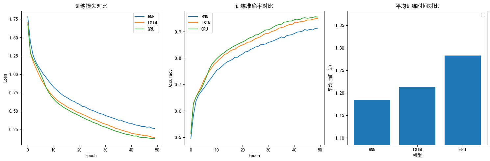
[('German', 0.9149948954582214), ('Vietnamese', 0.03444814682006836), ('Dutch', 0.029514135792851448)]
6 扩展-logsoftmax函数介绍
""" 案例: 演示 LogSoftmax()层(激活层) 函数的功能. """ # 导包 import torch import torch.nn as nn # 1. 定义模型输出的原始分数(logits), 表示 3个分类的预测值 -> 全连接层处理后的结果. output = torch.tensor([3.2, 5.1, -1.7]) # -------------------- 思路1: 使用LogSoftMax()计算 -------------------- # 2. 实例化LogSoftMax层, 指定在第0维度进行计算. log_softmax = nn.LogSoftmax(dim=0) # 3. 具体的计算, 先softmax(), 后log(), 然后打印结果. log_probs = log_softmax(output) print(f'LogSoftMax计算结果(类别概率分布): {log_probs}') # tensor([-2.0404, -0.1404, -6.9404]) print('-' * 30) # -------------------- 思路2: 手动验证, 先softmax(), 再log() -------------------- # 4. 先使用softmax()计算概率分布 softmax = torch.softmax(output, dim=0) print(f'softmax计算结果(类别概率分布): {softmax}') # 5. 对softmax()结果 取自然对数, 得到: 对数概率. log_softmax_probs = torch.log(softmax) print(f'对数概率: {log_softmax_probs}') # tensor([-2.0404, -0.1404, -6.9404])
LogSoftMax计算结果(类别概率分布): tensor([-2.0404, -0.1404, -6.9404])
------------------------------
softmax计算结果(类别概率分布): tensor([0.1300, 0.8690, 0.0010])
对数概率: tensor([-2.0404, -0.1404, -6.9404])
7 常见面试题
RNN 的基本状态更新公式是什么？
- $h_t = f(W_{xh}x_t + W_{hh}h_{t-1} + b)$，输出通常为 $y_t = g(W_{hy}h_t)$。
RNN 为什么容易出现梯度消失/爆炸？常见解决方法有哪些？
- 长序列反传导致梯度连乘；可用 LSTM/GRU、梯度裁剪、合理初始化。
LSTM 三个门的作用是什么？
- 遗忘门：决定保留或忘记多少旧记忆
- 输入门：决定写入多少新记忆
- 输出门：决定输出哪些信息
GRU 与 LSTM 的主要差异是什么？
- GRU 门更少、参数更少、训练更快；LSTM 表达能力更强但训练更慢。
双向 RNN 适合哪些任务？为什么不适合自回归生成？
- 适合理解类任务（分类、标注）；生成任务会使用未来信息而不满足因果性。目前自回归生成的主流方法是 Transformer架构。
7.1 代码作业
-
- 使用
nn.LSTM构建一个 LSTM 层（input_size=16, hidden_size=32, num_layers=2, batch_first=True），输入形状为(batch_size=4, seq_len=10, input_size=16)的随机张量，打印输出output、h_n、c_n的形状。
- 使用
-
- 使用
nn.GRU(bidirectional=True, batch_first=True)构建双向 GRU 层（hidden_size=64），输入一批随机序列，打印输出形状。
- 使用
import torch import torch.nn as nn # ============================== # 作业1：nn.LSTM 输入输出形状验证 # ============================== def homework1(): batch_size, seq_len, input_size = 4, 10, 16 hidden_size, num_layers = 32, 2 lstm = nn.LSTM(input_size=input_size, hidden_size=hidden_size, num_layers=num_layers, batch_first=True) x = torch.randn(batch_size, seq_len, input_size) output, (h_n, c_n) = lstm(x) print("=" * 40) print("作业1：nn.LSTM 输入输出形状") print("=" * 40) print(f"输入 x.shape : {x.shape} # (batch_size, seq_len, input_size)") print(f"输出 output.shape : {output.shape} # (batch_size, seq_len, hidden_size)") print(f"隐藏状态 h_n.shape : {h_n.shape} # (num_layers, batch_size, hidden_size)") print(f"细胞状态 c_n.shape : {c_n.shape} # (num_layers, batch_size, hidden_size)") # ============================== # 作业2：双向 GRU 输出形状说明 # ============================== def homework2(): print("\n" + "=" * 40) print("作业2：双向 GRU 输出形状验证") print("=" * 40) batch_size, seq_len, input_size, hidden_size = 4, 8, 32, 64 bi_gru = nn.GRU(input_size=input_size, hidden_size=hidden_size, num_layers=1, batch_first=True, bidirectional=True) x = torch.randn(batch_size, seq_len, input_size) output, h_n = bi_gru(x) print(f"输入 x.shape : {x.shape}") print(f"输出 output.shape : {output.shape} # (batch, seq, hidden_size*2={hidden_size*2})") print(f"h_n.shape : {h_n.shape} # (num_layers*2, batch, hidden_size)") print("\n说明: bidirectional=True 时，前向+后向两个方向的隐藏状态在最后一维拼接，" f"所以输出的最后一维为 hidden_size×2 = {hidden_size*2}") if __name__ == "__main__": homework1() homework2()
========================================
作业1：nn.LSTM 输入输出形状
========================================
输入 x.shape : torch.Size([4, 10, 16]) # (batch_size, seq_len, input_size)
输出 output.shape : torch.Size([4, 10, 32]) # (batch_size, seq_len, hidden_size)
隐藏状态 h_n.shape : torch.Size([2, 4, 32]) # (num_layers, batch_size, hidden_size)
细胞状态 c_n.shape : torch.Size([2, 4, 32]) # (num_layers, batch_size, hidden_size)
========================================
作业2：双向 GRU 输出形状验证
========================================
输入 x.shape : torch.Size([4, 8, 32])
输出 output.shape : torch.Size([4, 8, 128]) # (batch, seq, hidden_size*2=128)
h_n.shape : torch.Size([2, 4, 64]) # (num_layers*2, batch, hidden_size)
说明: bidirectional=True 时，前向+后向两个方向的隐藏状态在最后一维拼接，所以输出的最后一维为 hidden_size×2 = 128